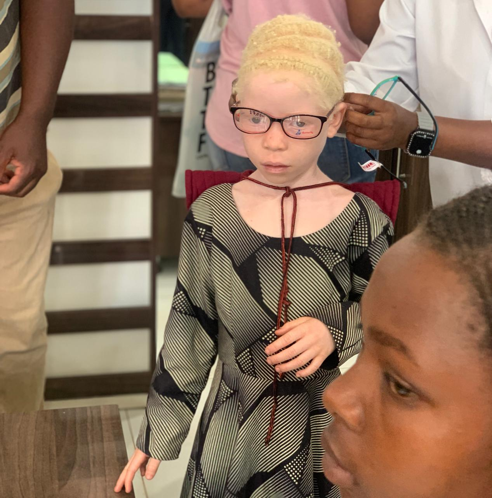
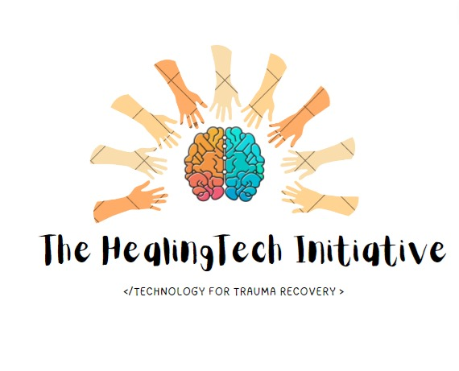

+265 997 774 972
Every young person reached, every skill learned, and every community empowered moves us closer to an inclusive digital future across Africa.
Stories in Progress
While we formalise our metrics dashboard, our active projects in Lilongwe and Nairobi are already creating meaningful change — improved vision and learning for children with albinism, and ongoing mentorship and digital skills for youth in Nairobi's Mathari community.
We believe in honest reporting. We will not publish numbers until they are verified and ready to share with our partners and communities.
View Active Projects

Our Commitment
We are establishing baseline surveys, attendance records, and outcome tracking for every programme — so impact is measured, not assumed.
Young people, mentors, and partner organisations will help shape how we define and communicate success — centreing lived experience.
Funders and partners will receive clear, honest updates as our metrics mature — building trust through accountability.